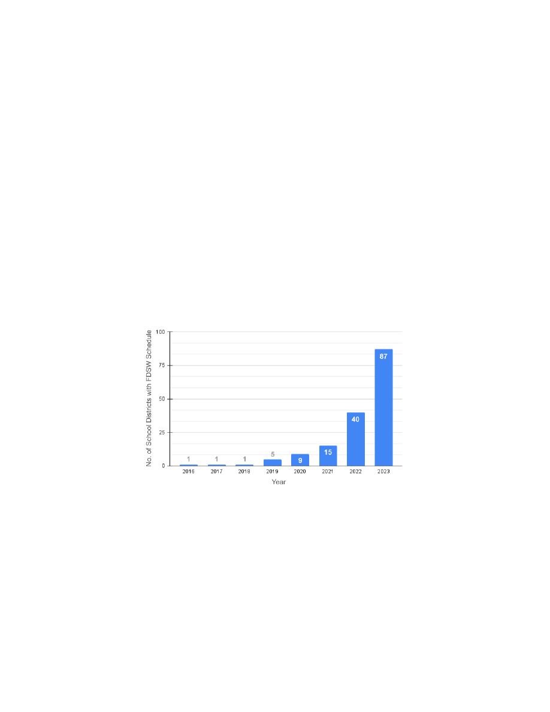
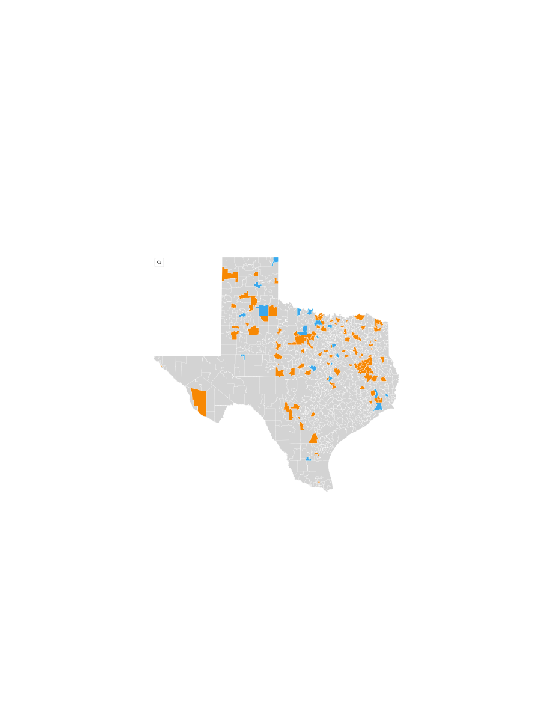
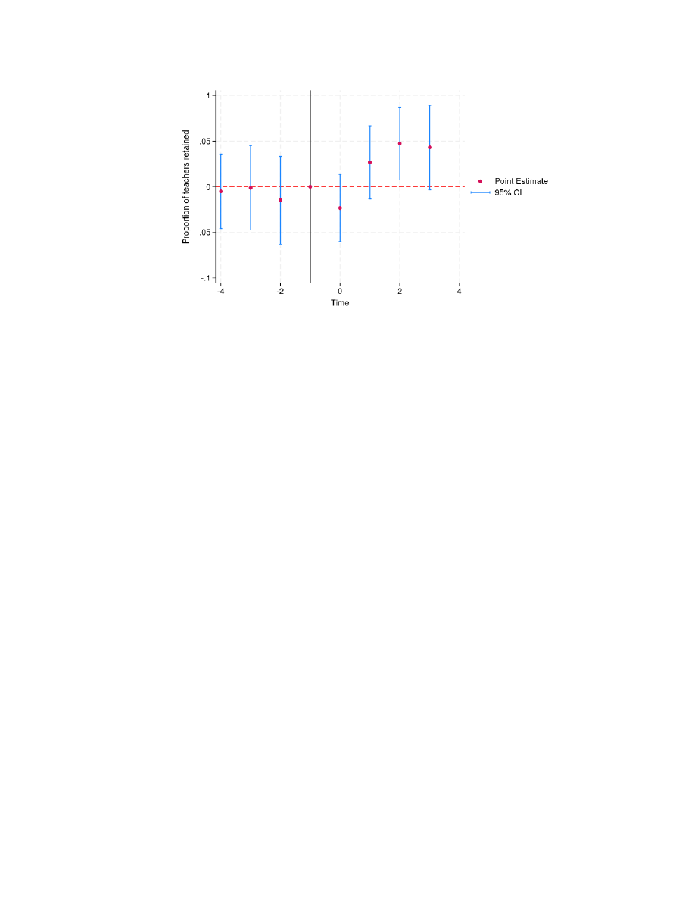
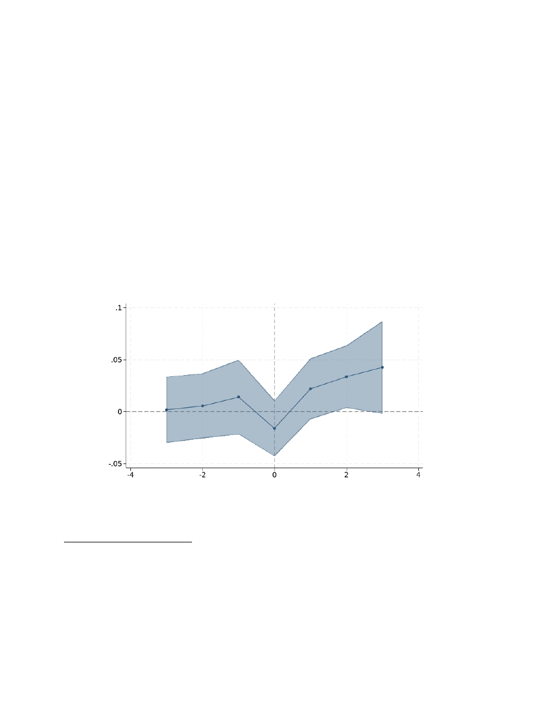
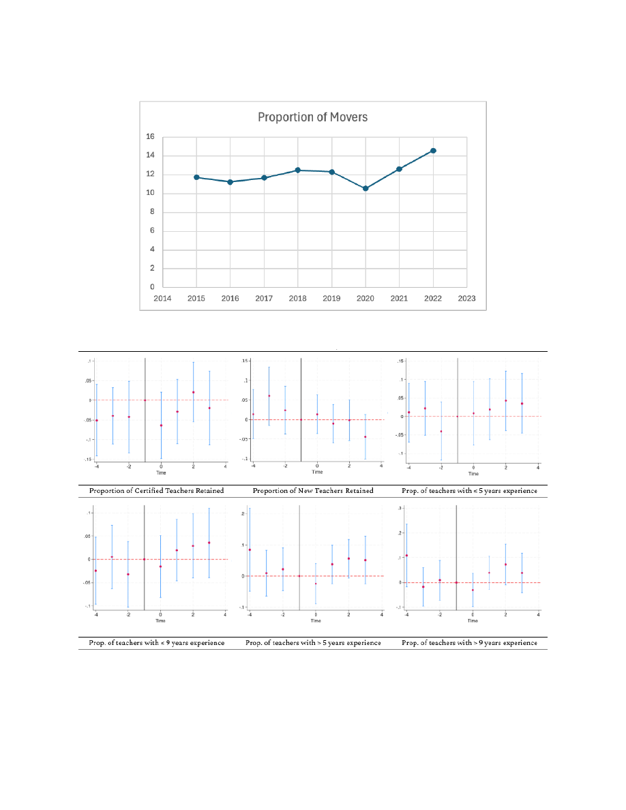
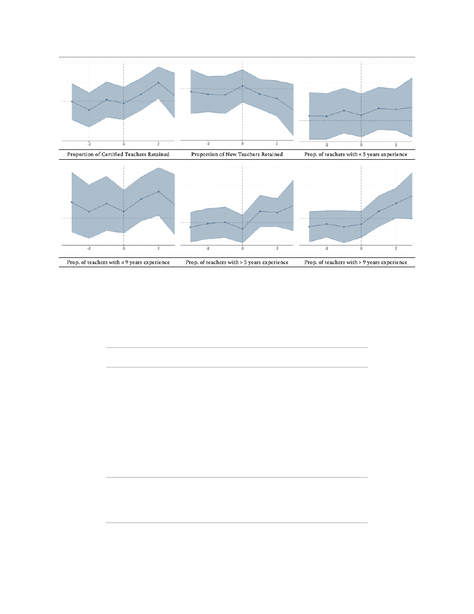

WORKING PAPER SERIES
Non-Monetary Incentives in Education
: Investigating the
Impact of Four-Day School Week on Teacher Retention & Hiring
Arslan Khalid, Ph.D.
September, 2025
EDRE Working Paper 2025-09
The University of Arkansas, Department of Education Reform (EDRE) working
paper series is intended to widely disseminate and make easily accessible the
results of EDRE faculty and students’ latest findings. The Working Papers in this
series have not undergone peer review or been edited by the University of
Arkansas. The working papers are widely available, to encourage discussion and
input from the research community before publication in a formal, peer reviewed
journal. Unless otherwise indicated, working papers can be cited without
permission of the author so long as the source is clearly referred to as an EDRE
working paper.

Non-Monetary Incentives in Education:
Investigating the Impact of Four-Day School Week on
Teacher Retention & Hiring
Arslan Khalid, Ph.D.
Research Assistant Professor of Education Policy
Department of Education Reform
University of Arkansas, Fayetteville
September 2025
Abstract
This study examines the impact of the four-day school week (FDSW) on teacher retention in
Texas public schools, a policy adopted by a growing number of districts in response to sta
ffi
ng
challenges and operational pressures. Using quasi-experimental methods and administrative
data, the analysis finds that FDSW adoption increases overall teacher retention by
approximately 3 percentage points and reduces the proportion of new hires by a similar
margin, suggesting a stabilizing e
ff
ect on the workforce. The results are particularly
pronounced for early-career teachers, with a 4.4 percentage point increase in retention among
those with five or fewer years of experience, and for female teachers, whose retention rises by
2.5 percentage points. Event study estimates show that these e
ff
ects become significant in
the second year a
f
er adoption, with retention increasing by nearly 5 percentage points.
Evidence also suggests that FDSW may improve the retention of certified teachers over time.
These findings highlight the potential of FDSW as a policy tool to mitigate teacher turnover,
especially among groups most at risk of attrition, while also underscoring the need for further
research on its long-term and broader labor market impacts.
1. Introduction
A four-day school week (FDSW) schedule eliminates one required school day per week -
either a Monday or Friday. In the U.S. a typical school has between 175 and 180 school days
in an academic year. Comparatively, a four-day school has on average 148 school days
(Thompson, 2021). In order to comply with state-mandated minimum instructional hours
requirements schools extend their school day by a few hours on the remaining four days.
School districts are motivated by various reasons to shi
f
to a four-day schedule including,
reduction in operational costs, reducing student and teacher absenteeism, increasing
teacher retention and morale, as well as attracting new teachers (Barnes & McKenzie, 2025).
Anecdotally, school administrators across the country have reported improvements in the
areas mentioned above a
f
er adopting a four-day school week. However, there is still little
empirical research on its impact, particularly regarding teacher retention and hiring.
In Texas, four-day schools were made possible when lawmakers passed House Bill
(HB) 2610 in 2015 which changed how classroom instruction was timed. Instead of
mandating 180 days, the new law required school districts to provide a minimum of 75,600
minutes of instruction. This gave school districts more flexibility with their schedules.
However, the move to an alternative schedule was not immediate. By 2018 only 1 school had
adopted a FDSW schedule. The recent discussion in the Texas legislature over Senate Bill
2368
1
– that would eliminate FDSW - brought to light considerable anecdotal information
and opinions on the advantages and disadvantages of the FDSW. It also highlighted the
need for rigorous empirical research that examines the e
ff
ect of this change in school
1
The bill was proposed by State Sen. Donna Campbell (R) and sought to end four-day weeks in schools by mandating
a minimum of 175 instructional days during the year. The senator said her reasoning for introducing the bill was the
negative impacts of four-day school week on students and families.
2

schedule, especially on factors of primary importance to policymakers and practitioners
such as teacher turnover. This paper makes an important contribution to our understanding
of the merits of FDSW in Texas by employing quasi-experimental research methods in
combination with rich administrative data from Texas to examine the e
ff
ect of the FDSW on
teacher turnover.
1.1. Four-day School Week in Texas
School districts in Texas have been struggling with teacher retention, especially since the
COVID-19 pandemic. Like many states across the country, during the pandemic Texas saw a
record number of teachers retiring and resigning (Adams, 2024). Given that the Texas
Legislature has not increased the basic allotment — the main component of student
funding — since 2019, despite inflationary double-digit price increases, schools are le
f
with
few options to incentivize teachers (Silva, 2024). Many school districts are therefore
switching to a four-day school week schedule primarily as a means to attract and retain
high-quality teachers.
“Our ‘why’ is simple and straightforward. We want to find, recruit and retain the best
teachers in the state in the classrooms for our students. This change [to four-day school
week] immediately makes Crosby ISD a top destination for educators in Harris County.”
Superintendent Paula Patterson. Source: Admas, 2024.
This is especially true for rural districts in North and East Texas that are o
f
en unable to
compete with higher salaries and other amenities o
ff
ered by larger schools (TCTA, 2022).
There is some anecdotal evidence about how the fi
f
h day allows teachers some reprieve by
giving them more time to plan their lessons and catch up on work. Therefore, in the absence
of a pay increase, a FDSW might be considered a positive incentive for teachers.
3
However, some school administrators and parents are also skeptical about the switch
to a FDSW. These concerns range from the e
ff
ect of FDSW on students' academic
performance, to their mental and physical well-being, to broader concerns about providing
childcare on the fi
f
h day as well as implications for delinquency in the district. At the time
of this research 108 school districts have adopted a FDSW with another 20 school districts
operating on a hybrid schedule
2
(Admas, 2024). As more schools consider making the switch,
it is important to move beyond anecdotal evidence and support this idea with empirical
research.
2. Literature Review
2.1. Teacher retention
Recruiting and retaining teachers is recognized as one of the most important policy issues
in education policy by researchers and practitioners (Hanushek & Rivkin, 2006). This is why
“strategic priority one” in the Texas Education Agency’s strategic plan for 2021-2025 is to
“recruit, support and retain teachers and principals” (2020). Teacher turnover is o
f
en
referred to as teacher mobility in research. Whenever a teacher switches schools, their role
in a school (from teaching to non-teaching), or leaves the profession entirely they are
contributing to teacher turnover. A more sophisticated analysis breaks down the mobility
status of a teacher into further categories like stayer, mover, or leaver (National Center for
Education Statistics, 2024). The latest data shows that teacher turnover in the United States
has hovered around 8% annually (Texas Education Agency, 2020-B). This leaves schools with
an unstable workforce and the tremendous burden of hiring thousands of teachers each
2
Hybrid schedules vary across school districts but usually involve the school adopting a four-day school for part of
the school year.
4

year. Studies have shown that high turnover can have significant administrative costs for
school. According to Ryan et al. (2017) ‘the National Commission on Teaching and
America’s Future estimates the cost of a teacher leaving to be as high as $17,862 per teacher.
Additionally, if one assumes that teachers improve with experience (Berry, 2010), then high
turnover also reduces a school’s capacity to support new teachers as well as spend more
resources on training. Furthermore, as Redding and Henry observe using data from North
Carolina, new teachers turnover at incredibly high rates, “only 38% of them remain in the
school they started”, and “8% of them leave within the first year” (2019).
Alternatively, it could be argued that some teacher turnover is beneficial for schools.
If the teachers entering the school are more e
ff
ective than those leaving it then turnover
could be positive. Some researchers have found that removing the least e
ff
ective teacher
from school improves student achievement (Hanushek, 2009). Additionally, some scholars
argue that turnover may not necessarily be a bad thing for an organization because it
“[brings] fresh energy and new ideas by exiting poor performers” (Merrill, 2013).
How can schools incentivize teachers to stay or join in the first place? Research
shows that salaries are important in any discussion about teacher attrition, retention and
job satisfaction (Leachman et al., 2017). Furthermore, salary di
ff
erentials between teachers
and alternative occupations also influence teacher shortages (Rumberger, 1987).
Unfortunately, as mentioned earlier, school districts o
f
en do not have the resources to o
ff
er
teachers higher salaries. Traditionally, schools may o
ff
er teachers additional
responsibilities, such as coaching or leading extracurricular activities. However, school
districts with tight budgets o
f
en start by reducing spending on extracurricular activities.
This could potentially have an even stronger negative impact on teacher retention as studies
have shown that teachers who participate in coaching sports also remain associated with
teaching longer (Brown, 2012; Cauley, 2011).
5

For teachers, budget cuts do not just equate to subpar salaries but also lead to a lack
of supplies and supports at schools. These include things like fewer teacher aides, lack of
classroom resources, or reduction in the number of nurses or librarians on campus. These
factors are also linked to job stress for a teacher and may influence their decision to leave
the profession (Pogodzinski, 2014). According to a National Center for Education Statistics
report, 31% teachers who moved from public schools between 2021 SY and 2022 SY cited
“school factors” as the main reason for moving. Similarly, a study examining working
conditions for Arkansas teachers found that those considering leaving their current schools
frequently cited “feeling unsupported, lacking influence over school policies, and
insu
ffi
cient planning time” as critical factors (Zamarro, McGee, & Schellhase, 2024).
In addition to these general budgetary challenges, teachers in rural areas face unique
circumstances that further complicate their working conditions. The rural context is
particularly important to consider because, as this paper will show, most schools that adopt
a FDSW schedule in Texas are in rural areas. Rural schools also face additional challenges
such as transportation, long bus rides, time to work on family farms and ranches (Morton &
Thompson, 2024), a limited teacher labor market, and poorer infrastructure compared to
schools in more urban areas. This leads to greater hiring and retention challenges for
schools in rural areas (Burton et al., 2013; Ingersoll, 2001; Monk, 2007). As Maiden et al.
note, the most di
ffi
cult challenge for rural schools when it comes to teacher recruitment is
““trying to attract teachers to high-needs, low-amenity areas while being unable to pay
salaries competitive with suburban and urban schools” (Maiden et al., 2020).
2.2.2. Four-day school week and teacher retention
The earliest documented four-day school week in the United States is 1931 in
Madison, South Dakota (Anderson & Walker, 2015; Donis-Keller & Silvernail, 2009). Looking
at the early history of FDSW in the country one can see that this alternative schedule is
6

always born out of necessity. In the early 1970s the shortened school week gained popularity
due to the energy crisis (Ryan, 2009) where schools tried to reduce transportation and utility
costs (Anderson & Walker, 2015). In the 2000s, the national economic downturn led to a
decrease in per-pupil funding in many states which prompted some state legislatures to
allow for more flexible school calendars (Anderson & Walker, 2015).
The last two decades have seen a sharp increase in the adoption of FDSW schedules
across the country., According to research by Morton and Thompson, from 1999 to 2019 the
number of school districts with FDSW schedules increased from 257 schools to 1,607
schools (2024). In their conservative estimation across the United States 2,100 schools in 900
school districts have transitioned to some form of FDSW schedule (2024). According to data
collected for this study, Texas has also seen a sharp increase in FDSW adoption since 2018.
While Texas only had one school district with a FDSW schedule in 2018, by 2024 the state
will have around 108 districts.
Previous research has considered various impacts of this schedule change, from
broader organizational e
ff
ects like school finances ((Chmelynski, 2003; Thompson, 2021) to
e
ff
ects on student achievement (Thompson, 2021-B; Morton & Thompson, 2024) and health
(Tomayko et al., 2021). There is, however, little empirical research on its impact on teacher
retention and hiring. Previous qualitative work by Marion (2018) examines the perception of
school administrators, counselors, and teachers on FDSW and its impact on retention,
recruitment and job satisfaction. The participants in the study found the new schedule to be
a significant positive in their personal lives - allowing them to balance family and work
better (Marion, 2018). Additionally, some schools also confirmed that the new schedule has
improved teacher recruitment and retention (Marion, 2018). This positive relationship,
however, is limited to two out of the three schools that participated in the case study and
therefore provides little evidence on the impact of FDSW schedule on teacher retention.
7

Another study by Maiden et al. (2020) aims to uncover “empirical linkages between
FDSW and retention” in Oklahoma. While the study finds positive e
ff
ects of teacher
salaries, and instructional and support expenditure on teacher retention it finds no evidence
that the implementation of FDSW improves teacher retention over time (Maiden et al.,
2020). This study is limited by the fact that most districts in Oklahoma adopted the new
schedule a
f
er 2017 and therefore the study does not have a robust number of districts with
FDSW schedule (Maiden et al., 2020).
More recent studies add mixed evidence regarding the impacts of FDSW. For
instance, Camp (2024) finds that in Arkansas, the adoption of FDSW appears to help retain
teachers who otherwise might move to other districts but may negatively a
ff
ect retention in
nearby non-adopting schools, although the evidence on teacher quality remains
inconclusive (Camp, 2024). Camp et al. (2024) highlight that in Missouri, FDSW calendars
have had only small and imprecisely estimated positive e
ff
ects on teacher retention,
underlining significant uncertainty regarding the e
ff
ectiveness of FDSW as a retention
strategy (2024). Similarly, Morton and Dewil (2024) report small negative or statistically
insignificant impacts on teacher retention in Colorado, suggesting that anticipated benefits
to recruitment and retention may not materialize, especially in non-rural settings (Morton &
Dewil, 2024). Moreover, Nowak et al. (2023) observe a significant negative e
ff
ect on teacher
retention among experienced teachers in a metropolitan district in Colorado, where
retention decreased by about 5 percent a
f
er adopting a FDSW, highlighting potential
unintended consequences of this policy in urban contexts (2023).
While several quantitative studies have highlighted mixed and o
f
en uncertain
e
ff
ects of the four-day school week (FDSW) on teacher retention, a mixed-methods study by
Fay (2019) in rural Missouri provides complementary insights into why and how this policy
might influence teachers' decisions to remain in their positions. Teachers reported
8

significant improvements in sta
ff
morale, enhanced work-life balance, reduced stress, and
better overall preparation for teaching due to the extended weekends o
ff
ered by the FDSW
schedule (Fay, 2019). Principals in these districts also observed notable increases in both
teacher applicant pools and retention rates following the policy shi
f
. Additionally, the
FDSW model contributed positively to student attitudes and attendance, although it
presented some instructional challenges related to longer weekends and missed
instructional time. Despite these perceived benefits, Fay (2019) found no significant
di
ff
erence in academic performance in ELA and Math MAP scores before and a
f
er
implementation of the four-day schedule, suggesting that the shortened week neither
significantly harmed nor improved student achievement. Given these mixed and limited
findings in existing literature, there is a clear need for additional rigorous, quantitative
analyses on this topic.
This research, therefore, is one of the first in Texas, and perhaps the country, to
provide empirical evidence on the use of FDSW schedule as a school policy intended to
improve teacher recruitment and retention.
3. Data
The research combines data from two main sources: the first is an original dataset that
identifies all school districts in Texas based on whether they have adopted a FDSW
modality or not. For those districts which have adopted this modality this data set captures
the school year in which this transition occurred as well as other relevant operational
details such as how the 5th school day was utilized. In addition, this data also includes
information such as school location, school start and end time and instructional time. This
data was compiled using online news sources that reported on Texas schools, the Texas
Classroom Teachers Association, and the Texas Education Agency. To ensure the
9

information was accurate and up to date, I also reviewed individual school district websites
when available. When information was missing or unclear, I contacted districts directly
using the contact details listed on their websites. All sources were corroborated and cross-
checked to provide the most reliable record of four-day school week adoption.
This dataset is complemented by extensive data from the Education Research Center
(ERC) at The University of Texas at Dallas. This data contains information on student
demographics, test scores, attendance and disciplinary outcomes as well as postsecondary
enrollment and competition. The data also contains extensive information on teachers
which can be linked to students at grade level. Access to this data was granted by the Texas
Higher Education Coordinating Board. The combined dataset consists of a school-level
panel for the years 2011 to 2023.
Figure 1: Total No. of School Districts Adopting FDSW by Year in Texas
According to the data collected for this research, in 2023 SY in Texas 87 school districts
adopted Four-day school week schedules. More schools are considering the switch to a four-
day school week or hybrid schedule. According to the most recent reports by KXAN 108
school districts in Texas have moved to a four-day week which a
ff
ects more than 117,000
students (Adams, 2024). A few school district boards in the state have already approved the
10

change in schedule to take place in 2025 SY. Over two-thirds of the schools in the data
collected for this paper take a Friday o
ff
, the remaining take Mondays o
ff
. The map below
shows that the 4DSW schedule is particularly popular in rural districts in north and east
Texas. Another important thing to note on the map is how FDSW adoption (shown in
orange) happens in clusters. This suggests that a school district’s decision to move to FDSW
is not completely isolated from neighboring districts’ schools schedules. This has important
implications for the validity of some of the assumptions made in this paper and these
implications are discussed in the methods sections below.
Figure 2: School Districts in Texas with FDSW and Hybrid Schedules. Source: Adams, 2024
Furthermore, it is important to consider how schools that adopt FDSW schedules are
di
ff
erent from schools that do not. Table 1 below provides summary statistics on how these
schools di
ff
er along with the p-value for the t-test for di
ff
erences in means. FDSW schools
are mostly located in the rural parts of the state. Out of the 81 schools that adopt a FDSW
schedule, 47 schools (58%) are in rural areas. Looking at the demographics among these
11
schools, FDSW schools are smaller than five-day schools in terms of both the total number
of students and teachers. The student to teacher ratio at FDSW schools is also lower at
almost 12 students per teacher compared to around 15 students per teacher in five-day
schools. Schools that adopt a FDSW schedule have 25 teachers on average compared to 41
teachers, and more importantly around 12 students per teacher compared to around 15
students per teacher in schools that do not have a FDSW schedule.
Table 1: Descriptive Statistics on Five-day and Four-day Schools (2011 - 2023)
Five-day Schools Four-day Schools T-test (p-values)
(1)
(2)
(3)
Teacher characteristics
Avg. no. of teachers
42.51
27.06
0.000
Avg. no. of students per teacher
15.47
12.53
0.000
Fraction of Black teachers
0.11
0.05
0.000
Fraction of Hispanic teachers
0.28
0.06
0.000
Fraction of White teachers
0.85
0.9
0.000
Fraction of male teachers
0.2
0.23
0.000
Prop. of certified teachers
0.38
0.35
0.000
Student characteristics
Prop. of FRPL students at school 0.63
0.64
0.043
Fraction of Black students
0.15
0.12
0.000
Fraction of Hispanic students
0.04
0.008
0.000
Fraction of white students
0.74
0.83
0.000
N
112,718
1,843
- -
Notes: all statistics report the average number or proportion in schools by year. Demographic statistics on teachers and students do not
add to 1 because I have excluded other minority ethnic groups from this table.
Four-day schools also di
ff
er from five-day schools in terms of the makeup of their
teachers and students. As Table 1 shows about 90% of teachers in schools that adopt a
FDSW are white compared to 86% in schools that do not adopt a FDSW schedule. Another
important di
ff
erence to highlight is the proportion of free and reduced-price lunch (FRPL)
students in schools. Schools that adopt a FDSW schedule have 67% FRPL students
12
compared to 63% in schools that do not adopt a FDSW schedule. Table 2 provides a
breakdown of the di
ff
erences in teacher retention rates between four-day and five-day
schools.
Table 2: Retention Rates for Four-day and Five-day Schools (2011 - 2023)
Five-day Schools Four-day Schools T-test (p-values)
(1)
(2)
(3)
Prop. of teachers
0.76
0.73
0.000
Prop. of female teachers
0.77
0.75
0.000
Prop. of teachers with > 9 years experience 0.83
0.80
0.000
Prop. of teachers with <= 5 years experience 0.63
0.60
0.000
Prop. of teachers with certification
0.75
0.72
0.000
Prop. of new teachers
0.23
0.27
0.000
N
73,386
1,279
- -
Notes: all rows report the proportion of teachers retained
4. Methodology
4.1. Two-way fixed e
ff
ects di
ff
erence-in-di
ff
erences
Similar to previous work by Thompson and Ward, (2022) and Anderson (2015) I plan on
using a di
ff
erence-in-di
ff
erences methodology that exploits the temporal and spatial
variation in adoption of FDSW to estimate its e
ff
ects on student achievement and teacher
turnover. This method allows me to exploit the panel nature of my data by estimating a
model that includes school fixed e
ff
ects and year e
ff
ects. Having access to ERC data also
allows me to conduct the analysis both with and without a host of observable characteristics
of schools, students, and teachers.
The main measure of proportion of teachers retained is created by dividing the
number of teachers who were in school
s
in both years
t-1
and year
t
with the number of
teachers in school in school
s
in year
t-1
.
13
��.
��
����ℎ���
��
��ℎ���
�
��
����
�
&
�
−
1
����������
��
����ℎ���
��������
=
��.
��
����ℎ���
��
��ℎ���
�
��
����
�
I use a similar formula to create other outcome variables such as: “proportion of
certified teachers retained”, and “proportion of teachers with more than 5 years of
experience retained”. The outcome variable “proportion of female teachers” is measured
slightly di
ff
erently, where instead of having all teachers in school s in year t I use the
number of female teachers in school s in year t.
��.
��
������
����ℎ���
��
��ℎ���
�
��
����
�
&
�
−
1
����������
��
������
����ℎ��
��������
=
��.
��
������
����ℎ���
��
��ℎ���
�
��
����
�
The empirical strategy is based on estimating the equation 1 below:
�
!"#
=
�
$
+
�
%
����
!"#
+
�
&
�
!"
+
�
!
+
�
#
+
�
!"#
(��.
1)
Where
Y
sdt
is the outcome of interest for school
s
located in district
d
in year
t
- in this paper
the main outcome variable is the proportion of teachers retained.
FDSW
sdt
is an indicator
variable that takes value 1 if school
s
has adopted a four-day school week schedule in year
t
and is zero otherwise. The coe
ffi
cient of interest
�
!
, represents the marginal e
ff
ect of
switching to a FDSW schedule.
X
sd
is a vector containing school level characteristics,
�
"
is
school level fixed e
ff
ects and
�
#
represents a survey year fixed e
ff
ect. The school level fixed
e
ff
ects control for permanent di
ff
erences across schools (di
ff
erences that are time-
invariant), and year fixed e
ff
ects control for di
ff
erences across time that are common to all
schools.
Here it is important to include a discussion about sources of bias in my estimates.
One potential source could be that only certain types of teachers may be attracted to
schools with a FDSW schedule. If I assume, for example, that shortened school week could
decrease the cost of commuting to schools for teachers so that this schedule could appeal
more to teachers who are relatively more burdened by commuting costs. If these types of
14

teachers are systematically more or less likely to leave the school then estimates of the e
ff
ect
of FDSW schedule on teacher retention at the school level would be biased. I address this
source of bias by disaggregating teacher retention in schools by teacher experience and
teacher certification. Both characteristics are considered to be important indicators of a
teacher’s quality. Future work on this would also include teacher value added scores as a
measure of teacher quality to really home in on what kind of teachers are driving retention
rates.
Another source of potential bias in my estimates could come from selection bias,
which is to say that schools choose their own schedules. Low-income, rural schools o
f
en do
poorly when it comes to hiring and retaining teachers. Anecdotal evidence would suggest
that the switch to FDSW o
f
en comes as a response to downward trends in teacher retention
and hiring. If only low-income schools change to a FDSW schedule then any observed
relationship between teacher retention and FDSW may simply reflect the financial status of
the school (Anderson & Walker, 2015). Using school fixed e
ff
ects in the regression
specification discussed above as well as covariates such as proportion of free and reduced-
price lunch students at a school help to purge my estimates of this sort of bias. School fixed
e
ff
ects, however, do not account for unobserved time-varying factors that simultaneously
influence teacher retention and school’s choice of schedule.
4.2. Event study
Any causal interpretation of di
ff
erence-in-di
ff
erences estimates is based on the assumption
that teacher turnover in schools that adopt FDSW would have followed a similar trend to
schools that did not implement FDSW in the absence of the treatment. Additionally,
previous research shows that such administrative changes in schools may take time to
emerge, i.e. the size of the treatment e
ff
ect varies with time (Thompson, 2022). One might
expect that the e
ff
ect of a four-day week could vary depending on the length of time since
15

the school implemented the four-day schedule. For example, Thompson (2019b) finds that
students may experience an initial decline in achievement when they switch schedules but
then stabilize to pre-switch achievement levels over time. Alternatively, students’
achievement may be benefited or harmed by the schedule the longer they are exposed to the
treatment, resulting in a dynamic e
ff
ect (positive or negative) of the four-day week over
time. In order to account for heterogeneity in treatment e
ff
ect due to treatment duration, as
well as provide more evidence that the control group is adequate, I implement an event
study methodology. In particular, I estimate the following equation:
%
�
"#
=
�
!
�
"#
+
�
#
+
�
"
+
(
�
$
��
"#
+
�
"#
(��.
2)
$&'%
Here
Y
st
is teacher turnover in school
s
in year
t
,
X
st
is a vector of time-varying school-level
characteristics,
�
"
is school-level fixed e
ff
ects, and
�
#
is a calendar year fixed e
ff
ect. The
term
∑
%
$&'%
�
$
��
"#
is a collection of binary variables for lags and leads around the event. For
example, d(-1)
st
is an indicator variable equal to 1 if school
s
implemented FDSW one period
ago as of year
t.
Similarly, d(1)
st
is an indicator variable equal to 1 if school
s
implemented
FDSW one period a
f
er year
t.
Intuitively the coe
ffi
cients on these lag and lead terms
estimate the di
ff
erence between teacher turnover trends of schools who do implement
FDSW relative to the teacher turnover of schools who either never implement FDSW or
have not yet implemented FDSW.
4.3. Callaway & Sant’Anna Estimator
A developing body of literature has highlighted concerns when using two-way fixed e
ff
ects
(TWFE) di
ff
erence-in-di
ff
erences (DID) models with staggered treatment timing, as
employed in this study. The TWFE estimator e
ff
ectively produces a weighted average of
various two-by-two period-specific DID estimates. However, these weights are influenced
by the proportion of treated units and the variance of treatment status in each comparison,
16

leading to potential biases (Morton, 2022). Crucially, TWFE estimators implicitly include
"forbidden comparisons" – comparisons between units that have already been treated at
di
ff
erent points in time. These comparisons are problematic because they assume that the
treatment e
ff
ect is constant across all treated groups, regardless of their treatment timing
(Goodman-Bacon, 2021; de Chaisemartin & D’Haultfoeuille, 2020; Callaway & Sant’Anna,
2021; Sun & Abraham). This assumption is o
f
en unrealistic, as treatment e
ff
ects may vary
over time due to factors like adaptation, learning, or changing economic conditions. When
treatment e
ff
ects are heterogeneous across adoption times, these forbidden comparisons
can lead to severe biases in the TWFE estimates (Goodman-Bacon, 2021; de Chaisemartin &
D’Haultfoeuille, 2020; Callaway & Sant’Anna, 2021; Sun & Abraham).
To mitigate these concerns, this analysis complements the original static DID point
estimates with reweighted estimates generated using the “csdid” Stata package, which
implements the Callaway and Sant'Anna estimator. This approach focuses on "good
comparisons" – comparisons between treated units and units that have not yet been treated
or will never be treated (2022). By isolating these relevant comparisons, the Callaway and
Sant'Anna estimator provides a more robust and accurate estimate of the average treatment
e
ff
ect (ATE) in the presence of staggered treatment adoption and heterogeneous treatment
e
ff
ects.
4.4. Matching
As mentioned earlier, for the above equation to be a causal model it must satisfy two
important assumptions: firstly, the treatment received by one school should not influence
the outcome I observe for another school (also known as the stable unit treatment value
assumption - SUTVA). This means that the potential e
ff
ect on teacher retention of a school
that switches to four-day schedule should only be influenced by its own schedule switch and
not another school’s. In reality however, it is not di
ffi
cult to imagine a scenario where if one
17

school district switches to a FDSW schedule, it results in some migration of teachers from
neighboring districts (assuming teachers prefer to work in a school with a four-day
schedule) with a five-day schedule. This means that the causal estimates I obtain are not
stable and probably biased upwards. In another study I observe the proportion of teachers
that switch schools in Texas and find that as of school year 2020 this proportion is on the
rise
3
. In order to investigate this further, I estimate the e
ff
ects of switching to a four-day
school week on the proportion of new teachers at a school in a separate specification of
equation 1.
The second important assumption in a di
ff
erence-in-di
ff
erences analysis is the
parallel trend assumption, where it is assumed that the control group’s change over time is
equivalent to the treatment group’s change over time in the absence of any treatment e
ff
ect.
This is di
ffi
cult to accomplish when the treated group is much smaller in comparison to the
control group. To reduce concerns about di
ff
erential trends between schools with and
without FDSW confounding our estimates, I choose control schools that are similar on a set
of observable characteristics using a nearest neighbor matching procedure. According to
this procedure, matched schools must have values of observable characteristics that lie
within a prespecified caliper width. To ensure that matched pairs of treatment and control
schools can be meaningfully compared I match exactly on school’s NCES location.
Additionally, I specify the caliper width to be within 1 standard deviation for share students
receiving free or reduced-price lunch, share non-Hispanic White students, share non-
Hispanic Black students, share Hispanic students, average number of students served per
teacher, proportion of black teachers, proportion of Hispanic teachers, and average
3
Proportion of teachers that switch schools was 10.6% in SY 2020, 12.6% in SY 2021, and 14.6% in SY 2022, as shown
on the graph included in Appendix A.
18

professional experience at school. Each school with a FDSW schedule is paired with five
never-treated schools. I also match control schools on proportion of teachers retained prior
to any treatment.
5. Results
5.1. Impact of FDSW adoption on teacher retention
As stated in the methodology section, first I estimate the e
ff
ect of FDSW adoption using a
two-way fixed e
ff
ects di
ff
erence-in-di
ff
erences strategy (equation 1). Table 3 presents results
for the following outcomes: proportion of teachers retained in a school, proportion of new
teachers at a school, and proportion of female teachers retained. Each column illustrates
results from a separate regression and all models include school and year fixed e
ff
ects. I do
not include covariates in this specification for two reasons, firstly relevant covariates such
student or teacher demographics are time-varying. Secondly, FDSW adoption might have
unexpected impacts on student behavior, teacher morale, or family dynamics, which could
significantly influence the covariates. To accurately account for these changing factors, I
would need to make strong assumptions about how these covariates interact with the four-
day school schedule policy (Camp, 2024; Sant’Anna & Zhao, 2020).
The results show that FDSW adoption is associated with an almost 3 percentage
point increase in overall teacher retention. I also find that the proportion of new teachers at
a school that adopts FDSW schedule decreases by about 2.9% percentage points. This would
indicate that the schedule change has a strong e
ff
ect on retaining teachers at a school year-
to-year and therefore these schools do not need to hire new teachers.
Table 3 also shows that the proportion of female teachers retained increases by 2.5
percentage points in schools that adopt a FDSW schedule. As mentioned above, the
proportion of female teachers retained is calculated from all female teachers at the school as
opposed to all teachers at a school. The result here shows that switching to a FDSW
19
schedule is associated with the school retaining 2.5 percentage point more proportion of
female teachers. This suggests that perhaps the flexibility that the new schedule o
ff
ers is
particularly important to female teachers.
Table 3: E
ff
ects of Adopting a FDSW Schedule
Prop. of Teachers
Prop. New
Prop. of Female Teachers
Retained
Teachers
Retained
(1)
(2)
(3)
FDSW adoption
0.0302***
-0.0292**
0.0250**
(0.00935)
(0.0101)
(0.0104)
N
4,074
4,074
4,074
R
2
0.033
0.021
–
School fixed effects
Yes
Yes
Yes
Year effects
Yes
Yes
Yes
Notes: each column presents the results from a separate OLS regression. The dependent variable is equal to the proportion of teachers
retained by categories like female, experience & certification. No control variables were included in this specification. Standard errors,
corrected for clustering at the school level are in parentheses.
*Statistically significant at 10% level; **significant at the 5% level; ***significant at the 1% level.
5.2. Impact on Certified and Experienced Teachers
Next I disaggregate teacher retention by years of experience and certification. This is
important to consider because Texas relaxed certification and preparation requirements to
help school districts that were struggling with teacher recruitment and retention (Aragon,
2016). Additionally, teacher certification status has also been linked to unequal quality of
instruction in the classroom with some studies suggesting that students who are taught by
teachers who were prepared through an alternative pathway have lower test scores on end-
of-course State of Texas Assessment of Academic Readiness (Mansell, 2024). Using the two-
way fixed e
ff
ects di
ff
erence-in-di
ff
erences model in Equation 1, I find that switching to a
20

FDSW schedule does not have a significant e
ff
ect on retaining teachers with standard
certification
4
(results included in Appendix A, Table 5).
Another indication of teacher quality is experience. In a review of existing research
on teacher e
ff
ectiveness, Kini & Podolsky find that teaching experience is positively
associated with student achievement gains throughout a teacher’s career (2016). In Table 4 I
look at the proportion of teachers retained by teacher experience. I find that switching to
FDSW is associated with an almost 4.4 percentage point increase in the proportion of
teachers retained with less than or equal to 5 years of experience. I also find that the
proportion of teachers retained with more than 5 years of experience increases by only 2.2
percentage points (half that of teachers with less than 5 years of experience). Finally, in
column 3 I find no significant e
ff
ects on retention for teachers with greater than 9 years of
experience. These findings suggest that the FDSW schedule might provide a greater
incentive for newer teachers to stay compared to teachers with more experience in the
profession.
5.3. Event Study
For reasons already discussed in the methodology section, I generate event study estimates,
with the year before adoption is used as the reference period, for proportion of teachers
retained (as well as other outcome variables) using the matched sample. I report point
estimators associated with 3 leads and 4 lags and their associated 95% confidence intervals.
These results presented in Figure 3 show a slightly noisier pre-trend for proportion of
teachers retained; however, the estimates are not statistically distinguishable from zero at
4
Standard certification requires a four-year bachelor’s degree in education or related field, and includes a period of
unpaid student teaching
21
the 95% confidence interval. I find that this supports the key identifying assumption about
parallel trends in my model.
Table 4: E
ff
ects of Adopting a FDSW Schedule by Teacher Experience
Prop. of Teachers
with
≤
5 years
Experience
(1)
Prop. of Teachers
with > 5 years
Experience
(2)
Prop. of Teachers
with > 9 years
Experience
(3)
FDSW Adoption
0.0438**
(0.0186)
0.0221*
(0.0114)
0.0153
(0.0108)
N
3,890
3,890
3,890
R
2
0.012
0.022
0.016
School fixed
effects
Yes
Yes
Yes
Year effects
Yes
Yes
Yes
Notes: each column presents the results from a separate OLS regression. The dependent variable is equal to the proportion
of teachers retained by categories like female, experience & certification. Standard errors, corrected for clustering at the
school level are in parentheses.
*Statistically significant at 10% level; **significant at the 5% level; ***significant at the 1% level.
Figure 3 also shows that generally, with increased duration of FDSW schedule in
schools the proportion of teachers retained increases. In the first year of adoption (time = 0)
the proportion of teachers retained is less than 0 but not significant. In the year following
the switch to FDSW schedule, the proportion of teachers retained is positive but still not
significant. Most notably, compared to the year before adoption, the proportion of teachers
retained increases by 4.9 percentage points in the second year of adoption of FDSW
schedule. This corroborates other research that suggests that the e
ff
ects of FDSW adoption
may take time to emerge (Thompson, 2021; Thompson & Ward, 2022). Figure 6 in the
Appendix A also shows results for other outcome variables however none of the results are
significant at the 95% confidence interval.
22

Figure 3: Event Study Results - Proportion of Teachers Retained
5
5.4. Callaway & Sant’Anna Estimator
Finally, I deploy a robustness check to address a key assumption of the two-way fixed e
ff
ects
(TWFE) di
ff
erence-in-di
ff
erences specification with variation in treatment timing. As
discussed in the methodology section, a growing body of literature shows that the TWFE
model puts heavier weights on inappropriate comparison groups, which calls into question
the interpretability of the average treatment e
ff
ect (Morton, 2022; Khalid, 2024). Therefore,
In Figure 4 I examine the e
ff
ect of FDSW adoption on teacher retention by length of
exposure using the estimator proposed by Callaway and Sant’Anna (CS). The CS estimator
corrects the major issue in the TWFE by not including any post-treatment controls for
treated schools and only comparing treated schools with either untreated or not-yet-treated
schools (Khalid, 2024). Each point in Figure 4 represents an estimate of a year either before
or a
f
er adoption. I report point estimators associated with 3 leads and 3 lags, and their
5
The vertical bars depict the 95% confidence interval for the estimated e
ff
ect for each year of event time. The point
estimates are given along the Y-axis (in standard deviation units) and are relative to the year before four-day school
week adoption (t =
−
1).
23

associated 95% confidence intervals shown by the shaded area
6
. The proportion of teachers
retained at school is significantly impacted by FDSW adoption 2 years a
f
er the schedule
change is implemented. These results would suggest that my findings are consistent with an
underlying causal relationship between adoption of FDSW and teacher retention.
In Appendix A I include Figure 7 which shows results for other outcome variables
such as proportion of certified teachers and proportion of teachers with greater than 5 years
of experience. I find that most of those results are not significant. However, interestingly
when I use the CS estimator instead of TWFE, I find that the proportion of certified
teachers is positive and significant in the second year of adoption of the FDSW schedule.
All other results are not significant at the 95% confidence interval.
Periods treated
Figure 4: Event study results - using CS estimates
7
6
As Jonathan Roth notes, event study plots generated from CS estimates may show a kink or jump due to the
asymmetric construction of pre-treatment and post-treatment coe
ffi
cients, regardless of any treatment e
ff
ect (2024).
In order to combat this, I use “long-di
ff
erences” for the pre-treatment coe
ffi
cients as well as the post-treatment
coe
ffi
cients. In the STATA
“csdid”
package this can be done by using base_period =
“universal”
and
“long2”
(Roth, 2024).
7
Point estimator associated with 3 leads and 3 lags and their associated 95% confidence intervals shown by the
shaded area
24
6. Conclusion & Discussion
Superintendents frequently cite teacher retention and recruitment as a key justification for
adopting a FDSW schedule
8
. The problem of teacher retention in Texas has been
particularly exacerbated by the COVID-19 pandemic with a record number of teachers
resigning since the pandemic (Adams, 2024). The findings from this study provide strong
evidence that the adoption of a FDSW has a meaningful impact on teacher retention in
Texas public schools. Schools that transition to a FDSW schedule see an increase in overall
teacher retention by approximately 3 percentage points and a corresponding decrease in the
proportion of new teachers by nearly the same margin. This suggests that the schedule
change has a stabilizing e
ff
ect on the teaching workforce, reducing turnover and the need
for new hires. Additionally, the retention of female teachers increases by 2.5 percentage
points, indicating that the flexibility a
ff
orded by a FDSW schedule may be particularly
appealing to female educators, possibly due to improved work-life balance considerations.
When disaggregating retention by teacher experience and certification status, the
results reveal a more nuanced impact. The FDSW schedule appears to be most beneficial for
early-career teachers, with a 4.4 percentage point increase in retention for those with five or
fewer years of experience. In contrast, the e
ff
ect on more experienced teachers diminishes
as tenure increases, with no significant impact observed for teachers with more than nine
years of experience. These findings suggest that FDSW may serve as an e
ff
ective policy lever
for improving retention among newer teachers, a group that historically faces high attrition
rates.
8
In October 2023 Oregon State University organized a two-day conference on four-day school week
where I got the chance to hear from superintendents, practitioners and researchers
25

Interestingly, the results indicate that while the retention of teachers with standard
certification does not significantly change with FDSW adoption in the TWFE model,
robustness checks using the Callaway and Sant’Anna estimator reveal a significant positive
e
ff
ect on the proportion of certified teachers in the second year of adoption. This suggests
that FDSW may eventually contribute to retaining more certified educators, although the
impact takes time to manifest.
The event study estimates provide further evidence supporting the causal link
between FDSW and teacher retention. While the immediate e
ff
ect of FDSW adoption is
negligible, the impact becomes more pronounced in the second year of implementation,
with a 4.9 percentage point increase in teacher retention. This delayed e
ff
ect aligns with
prior research suggesting that the benefits of FDSW policies may take time to materialize
(Thompson, 2021; Thompson & Ward, 2022).
The implications of these findings may be significant for school districts facing
persistent teacher shortages. The results suggest that FDSW adoption may prove to be a
viable strategy to improve teacher retention, particularly among early-career educators and
female teachers. School administrators and policymakers should consider the potential
benefits of FDSW as part of a broader strategy to enhance teacher job satisfaction and
reduce turnover. The findings also highlight that the policy may not have uniform e
ff
ects
across all teacher demographics, necessitating targeted retention strategies for more
experienced teachers.
With only 103 out of 1,200 Texas school districts using it, this FDSW schedule
remains far from widespread adoption. While this study provides valuable insights, several
avenues for future research remain. First, further investigation into the long-term e
ff
ects of
FDSW on teacher retention beyond the initial years of adoption is needed as these e
ff
ects
26
may not be long-lasting
9
. Additionally, as more research on how FDSW a
ff
ects teacher job
satisfaction, instructional quality, and student achievement comes to light, it is also
important to consider the role of contextual factors, such as district characteristics and
community support, in shaping the e
ff
ectiveness of FDSW policies. Finally, expanding the
analysis to other states that have adopted FDSW schedules could provide comparative
insights into the generalizability of these findings.
One limitation of this study is that it does not adequately account for the spillover
e
ff
ects of FDSW adoption. When one school district implements a FDSW schedule, it may
influence teacher retention and hiring in surrounding districts. For example, neighboring
districts that continue with a traditional five-day schedule may experience higher turnover
rates as teachers seek the perceived benefits of a FDSW schedule elsewhere. Alternatively,
FDSW adoption in one district could lead to an influx of teachers from surrounding areas,
impacting the overall labor market for educators. Future research should investigate these
spillover e
ff
ects by examining cross-district teacher movement and retention patterns to
better understand the broader impact of FDSW adoption.
Overall, this research contributes to the growing body of literature that is examining
the e
ff
ects of FDSW on various aspects of school operations, including teacher retention,
instructional quality, student achievement, and student well-being. While much of the
existing research has focused on student academic performance and financial savings
associated with FDSW adoption, fewer studies have rigorously analyzed its impact on
teacher workforce dynamics. By providing empirical evidence on the retention e
ff
ects of
9
Research by Thompson on the impact of FDSW on student achievement shows that students may
experience an initial decline in achievement when they switch schedules but then stabilize to pre-switch
achievement levels over time (2019).
27

FDSW, this study fills a critical gap in understanding how schedule changes influence
teacher stability, particularly for early-career and female educators. Furthermore, by
employing robustness checks such as the Callaway and Sant’Anna estimator, this study
strengthens the methodological rigor in evaluating the causal e
ff
ects of FDSW policies.
These findings o
ff
er valuable insights for policymakers and administrators seeking
strategies to improve teacher retention while balancing the broader implications of FDSW
adoption on educational outcomes.
28

Appendix A: Additional Plots and Tables
Figure 5: Proportion of Teachers that Move Between Schools by School Year
Figure 6: Additional Event-Study Results by Teacher Characteristics
29

Figure 7: Additional Event Study Results Using Callaway & Sant’Anna Estimator
Table 5: E
ff
ects of Adopting a FDSW Schedule on Retention of Certified Teachers
Prop. of Certified Teachers Retained
FDSW Adoption
0.0197
(0.0145)
N
4,074
R
2
0.072
School fixed effects
Yes
Year effects
Yes
Notes: each column presents the results from a separate OLS regression. The dependent variable is
equal to the proportion of teachers retained by categories like female, experience & certification.
Standard errors, corrected for clustering at the school level are in parentheses.
*Statistically significant at 10% level; **significant at the 5% level; ***significant at the 1% level.
30

References
Adams, Christopher, (March 6, 2023). “108 Texas school districts have moved to four-day
weeks, a
ff
ecting more than 117,000 students”. Education,
KXAN
,
https://tinyurl.com/8ttuhcnn, Retrieved on: 12/23/2024
Anderson, D. M., & Walker, M. B. (2015). Does shortening the school week impact student
performance? Evidence from the four-day school week.
Education Finance and Policy
, 10(3),
314-349.
Aragon, S. (2016). Teacher Shortages: What We Know. Teacher Shortage Series. Education
Commission of the States.
Barnes, K., & McKenzie, S. C. (2025). We wanted to do something innovative: Exploring
motivations of Arkansas districts adopting four-day school weeks or year-round
calendars.
Leadership and Policy in Schools
, 1-15.
Berry, R. A. (2010). “Preservice and early career teachers' attitudes toward inclusion,
instructional accommodations, and fairness: Three profiles.” Teacher Educator 45: 75–95.
Bertrand, M., Duflo, E., & Mullainathan, S. How Much Should We Trust Di
ff
erences-in-
Di
ff
erences Estimates?
Quarterly Journal of Economics
. 2004.
Brown, A. (2012). The occupational socialization of novice, core content area
teachers/athletic coaches. The University of Alabama.
Boyd, D., Lankford, H., Loeb, S., Ronfeldt, M., & Wycko
ff
, J. (2011). The role of teacher
quality in retention and hiring: Using applications to transfer to uncover preferences of
teachers and schools.
Journal of Policy Analysis and Management
, 30(1), 88-110.
Burton, M., Brown, K., & Johnson, A. (2013). Storylines about rural teachers in the United
States: a narrative analysis of the literature.
Journal of research in rural education
, 28(12).
Cabral, M., Kim, B., Rossin-Slater, M., Schnell, M., & Schwandt, H. (2021). Trauma at school:
The impacts of shootings on students' human capital and economic outcomes (No. w28311).
National Bureau of Economic Research
.
31

Camp, Andrew. (2024). Teacher Retention and Quality in the Four-Day School Week.
(EdWorkingPaper: 24-971). Retrieved from Annenberg Institute at Brown University:
https://doi.org/10.26300/fy9t-4097
Camp, A. M., Wilson, T., Liu, Y., Anglum, J. C., Manion, A., & Nguyen, T. (2024). Teacher
Retention and the Four-day School Week in Missouri. [Research Brief].
Policy Research in
Missouri Education Center at Saint Louis University.
Cauley III, W. R. (2011). Beginning teachers that coach high school athletics: A case study.
North Carolina State University
.
Charles Butt Foundation. (2021). “How Teachers Experience Pandemic Challenges”. Charles
Butt Foundation. Retrieved from: https://charlesbuttfdn.org/wp-
content/uploads/2022/01/2021_How-Texas-Teachers-Experience-Pandemic-Challenges.pdf
Chmelynski, C. (2003). Four-day school weeks? Only if they fit. The Education Digest, 68(5),
58.
Donis-Keller, C., & Silvernail, D. L. (2009). Review of Evidence on Four-Day School Week.
Research Brief. Center for Education Policy, Applied Research and Evaluation, University of
Southern Maine
Fay, P. D. (2019).
The four-day school week: Teacher retention and recruitment, perceptions, and
achievement
. Lindenwood University.
Fernando Rios-Avila & Pedro H.C. Sant'Anna & Brantly Callaway, 2021. "CSDID: Stata
module for the estimation of Di
ff
erence-in-Di
ff
erence models with multiple time periods,"
Statistical So
f
ware Components S458976, Boston College Department of Economics,
revised 25 Feb 2023.
Guarino, C. M., Santibanez, L., & Daley, G. A. (2006). Teacher recruitment and retention: A
review of the recent empirical literature. Review of educational research, 76(2), 173-208.
Hanushek, E. A., Rivkin, S. G., & Schiman, J. C. (2016). Dynamic e
ff
ects of teacher turnover
on the quality of instruction. Economics of Education Review, 55, 132-148.
32
Holme, J. J., Jabbar, H., Germain, E., & Dinning, J. (2017). POLICY BRIEF: Rethinking
Teacher Turnover in Texas: Longitudinal Measures of Instability in Schools. Education
Research Center. The University of Texas at Austin.
Ingersoll, R. M. (2001). Teacher turnover and teacher shortages: An organizational analysis.
American educational research journal, 38(3), 499-534.
Jabbar, H., Holme, J.J., De La Garza, S., & Trautmann, K. (2021). Repair the fractures:
Addressing the impact of COVID-19 on schools. Retrieved from:
http://sites.edb.utexas.edu/teacher-turnover-project/policy-briefs/
Khalid, M. S. (2024). Applications of methods in causal inference (Order No. 31146274).
Available from ProQuest Dissertations & Theses Global. (3059906521). Retrieved from
http://libproxy.utdallas.edu/login?url=https://www.proquest.com/dissertations-
theses/applications-methods-causal-inference/docview/3059906521/se-2
Kini, T., & Podolsky, A. (2016). Does Teaching Experience Increase Teacher E
ff
ectiveness? A
Review of the Research. Learning Policy Institute.
Leachman, M., Masterson, K., & Figueroa, E. (2017). A punishing decade for school funding.
Center on Budget and Policy Priorities, 29, 1-17.
Lopez, Brian. (2022). “It’s not just COVID-19: Why Texas faces a teacher shortage”. The
Texas Tribune. Retrieved from: https://www.texastribune.org/2022/07/25/texas-teacher-
shortage/#:~:text=Teacher%20retirement%20is%20up%20as,teacher%20retirements%20will%
20level%20o
ff
.
Maiden, J., Crowson, H. M., & Byerly, C. (2020). The influence of the adoption of a school
district four day instructional week on teacher retention. Journal of Education Finance,
46(2), 117-139.
Mansell, K. E. (2024). Does science teacher certification matter? A closer look at first
‐
year
science teacher impacts on student outcomes in Texas.
Review of Education
, 12(1), e3461.
Marion, K. S. (2018). The perceived impact of the four-day school week on teacher
recruitment, teacher retention, and job satisfaction. Lindenwood University.
33

Morton, E. (2022). E
ff
ects of four-day school weeks on older adolescents: Examining impacts
of the schedule on academic achievement, attendance, and behavior in high school.
Edworkingpapers. com. Annenberg Institute at Brown University.
Morton, E., & Dewil, E. (2024). Impacts of Four-Day School Weeks on Teacher Recruitment
and Retention and Student Attendance: Evidence from Colorado. Working Paper No. 307-
0924.
National Center for Analysis of Longitudinal Data in Education Research (CALDER)
.
Morton, E., Thompson, P. N., & Kuhfeld, M. (2024). A multi-state, student-level analysis of
the e
ff
ects of the four-day school week on student achievement and growth.
Economics of
Education Review
, 100, 102524.
Nguyen, T. D., Pham, L., Springer, M. G., & Crouch, M. (2019). The factors of teacher
attrition and retention: An updated and expanded meta-analysis of the literature.
Annenberg
Institute at Brown University
, 19-149.
Nowak, A. D., Perrone, F., & Smith, P. S. (2023). How Do Homeowners, Teachers, and
Students Respond to a Four-Day School Week? EdWorkingPaper No. 23-721.
Annenberg
Institute for School Reform at Brown University
.
Perryman, J. (2022). Teacher Retention in an Age of Performative Accountability: Target
culture and the discourse of disappointment.
Routledge
.
Pogodzinski, B. (2014). Collegial support and novice teachers’ perceptions of working
conditions.
Journal of Educational Change
, 15, 467-489.
Redding, C. and G. T. Henry (2019). “Leaving school early: An examination of novice
teachers’ within- and end-of-year turnover.” American Educational Research Journal 56(1):
204–236.
Rivkin, S.G., Schiman, J.C., 2015. Instruction time, classroom quality, and academic
achievement. Econ. J.125 (588), F425–F448.
Roth, J. (2024). Interpreting event-studies from recent di
ff
erence-in-di
ff
erences methods.
arXiv preprint arXiv:2401.12309
.
34
Rumberger, R. W. (1987). The impact of salary di
ff
erentials on teacher shortages and
turnover: The case of mathematics and science teachers.
Economics of education review
, 6(4),
389-399.
Ryan, M. (2009). Four-day school week. Education Commission of the States. Available at:
http://www. ecs. org/clearinghouse/82/94/8294. pdf.
Ryan, S. V., et al. (2017). “Leaving the teaching profession: The role of teacher stress and
educational accountability policies on turnover intent.”
Teaching and Teacher Education
66:
1–11.
Sant’Anna, P. H. C., & Zhao, J. B. (2020). Doubly Robust Di
ff
erence-in-Di
ff
erences
Estimators.
arXiv:1812.01723 [Econ]. http://arxiv.org/abs/1812.01723
Silva, Claudia Lorena, (2024). “Education in crisis: Q&A with Texas school finance experts”.
El Paso Matters
. Retrieved from: https://elpasomatters.org/2024/06/11/el-paso-schools-budget-
deficit-raise-your-hand-texas/
TCTA, (2022), “More Texas Teachers Shi
f
Schedules to Four-day School Week”, The
Classroom Teacher, Texas Classroom Teachers Association, Web:
https://www.tcta.org/professional-resources/publications/the-classroom-teacher/winter-
2022-23/more-texas-districts-shi
f
-schedules-to-four-day-school-weeks, Retrieved on:
12/23/2024
Templeton, T., Lowrey, S., & Horn, C. L. (2022). Texas classroom teacher certification.
Technical report, University of Houston Education Resource Center.
Texas Education Agency (2020-B).“Employed Teacher Attrition and New Hires 2006-07
through 2020-21”, tea.texas.gov.
Thompson, P. N. (2019). E
ff
ects of four-day school weeks on student achievement: Evidence
from Oregon (No. 12204).
IZA Discussion Papers
.
Thompson, P. N. (2021). Does a day lost equal dollars saved? The e
ff
ects of four-day school
weeks on school district expenditures.
National Tax Journal
, 74(1), 147-183.
35

Thompson, P. N. (2021-B). Is four less than five? E
ff
ects of four-day school weeks on student
achievement in Oregon. Journal of Public Economics, 193, 104308.
Tomayko, E. J., Thompson, P. N., Smith, M. C., Gunter, K. B., & Schuna Jr, J. M. (2021).
Impact of Reduced School Exposure on Adolescent Health Behaviors and Food Security:
Evidence From 4
‐
Day School Weeks. Journal of School Health, 91(12), 1055-1063.
Varela, D. G. (2011). Factors influencing the percent of non-certified teachers in Texas
school districts.
Zamarro, G., McGee, J. B., & Schellhase, M. (2024). Wellbeing and Working Conditions in
the Arkansas Teacher Workforce. https://edre.uark.edu/_resources/pdf/edrerb-2024-02.pdf
36
Document Outline